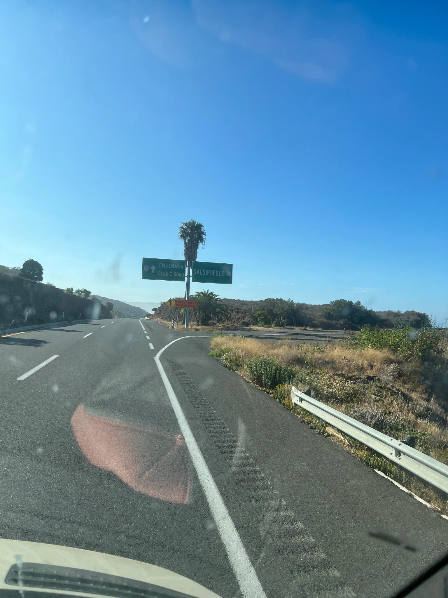

Across the Border
The first day. We figured out as we were passing Salsipuedes that we
have been to Baja 8 times since we met. The second time was on our way
to Panama, where the van stopped working. Maybe we would have made it
further?

Salsipuedes - Leave if you can.